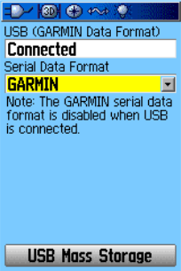
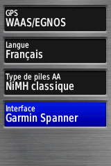
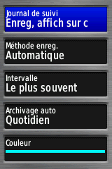

Configuration du GPS
Pour pouvoir utiliser un GPS Garmin depuis Lunar Eclipse Maestro vous devez d’abord configurer son interface de communication.
Quand un GPS est connecté à votre Mac, vous pouvez transférer les coordonnées géographiques et l’altitude fournies par celui-ci. Tous les GPS Garmin USB utilisant le protocole propriétaire Garmin PVT (non testé avec un câble série et un adaptateur série-USB) sont supportés et fournissent un positionnement en temps réel. Les récepteurs qui opèrent seulement en mode stockage de masse lorsqu’ils sont connectés ne peuvent pas fournir un positionnement en temps réel (merci de lire attentivement mode Garmin Spanner); cependant la dernière position, lorsque le récepteur n’était pas encore connecté, est stockée dans l’unité et peut être lue.
Les modèles recommandés sont (désactivez le mode stockage de masse et réglez l’interface sur GARMIN pour les anciens modèles et Garmin Spanner sur les plus récents):
- série GPS 18x (récepteur en forme de palet, le plus fiable et le moins cher)
- série eTrex (anciens modèles comme les Legend H, Legend HCx, Summit Cx, Venture Cx ou Vista HCx)
- GPSMap 60CSx, GPSMap 60CS ou GPSMap 60
- GPSMap 62stc, GPSMap 62st, GPSMap 62sc, GPSMap 62s ou GPSMap 62 (microprogramme plus récent que 3.40)
- GPSMap 64st, GPSMap 64s ou GPSMap 64
- GPSMap 76CSx, GPSMap 76CS ou GPSMap 76C
- GPSMap 78s, GPSMap 78sc ou GPSMap 78 (microprogramme plus récent que 3.40)
- série Oregon
- série Montana
- série Rino 6xx
-
Sélectionnez Réglage > Interface sur votre GPS Garmin.
GPS anciens comme le GPSMap 60.

GPS récents comme les GPSMap 62 ou 64.

En connectant le GPS avec un câble USB, répondez "Non" quand il vous est demandé de passer en mode stockage de masse. -
Sélectionnez ensuite GARMIN comme protocole de communication.
NMEA over USB n’est pas supporté.
Tous les récepteurs GPS respectant le standard NMEA 0183 devraient aussi être supportés. Pour configurer ces appareils connectez les d’abord soit avec un adaptateur Série vers USB ou alors en Bluetooth.
Les modèles recommandés sont:
- DUAL XGPS160 SkyPro (Bluetooth opérant à 10Hz, donc jusqu’à dix positions par seconde); il y a aussi un indicateur de niveau de batterie sur l’affichage de la constellation des satellites
- Garmin GLO (Bluetooth opérant à 5Hz, donc jusqu’à cinq positions par seconde)
- Garmin 18x LVC ou PC
- Qstarz BT-Q818X (Bluetooth opérant à 5Hz, donc jusqu’à cinq positions par seconde)
- G-Mouse/DIYmall VK-162 (récepteur USB peu coûteux, environ 15€ ou USD15)
Vous pouvez ensuite mettre à jour le lieu de l’observateur.
Avec Lunar Eclipse Maestro Pro et le GPS approprié, le Mac peut utiliser le signal Pulse-Per-Second ou PPS pour déterminer la correction à apporter à l’horloge du Mac.
Pour les récepteurs qui opèrent seulement en mode stockage de masse lorsqu’ils sont connectés, seule la dernière position, lorsque le récepteur n’était pas encore connecté, peut être lue. Les modèles généralement concernés sont:
- série eTrex (nouveaux modèles comme les 10, 20 et 30)
- série Nüvi
- série Zūmo
- série Dēzl
- série Camper
Les réglages recommandés pour les tracés sont indiqués ci-dessous.
-
L’enregistrement des points de cheminement toutes les secondes n’est généralement pas utile.
